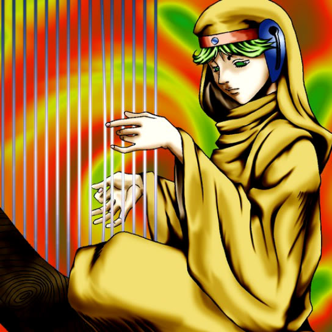

Spirit of the Harp

STATS
ATK: 800
DEF: 2000DECK COST
Deck Cost per Card: 28Fusion List (8 Possible Fusions)
- Spirit of the Harp + Dancing Elf = Dark Witch
- Spirit of the Harp + Doma The Angel of Silence = Dark Witch
- Spirit of the Harp + Hoshiningen = Dark Witch
- Spirit of the Harp + Ray & Temperature = Dark Witch
- Spirit of the Harp + Skelengel = Dark Witch
- Spirit of the Harp + Spirit of the Harp = Dark Witch
- Spirit of the Harp + Tenderness = Dark Witch
- Spirit of the Harp + Winged Egg of New Life = Dark Witch